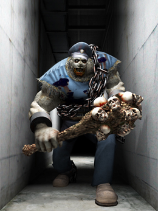
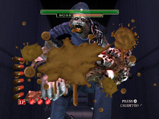
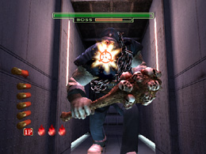
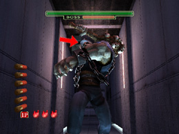
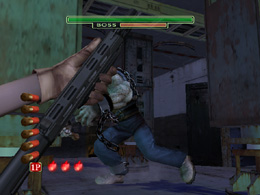
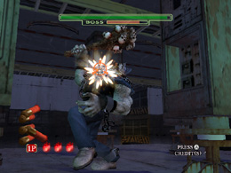

HODIII DEATH
ボス攻略 HODIII
次は、THE HOUSE OF THE DEAD 3 の攻略に移るぞ。

「DEATH」は巨大なこん棒を手に、執拗に追跡してくる凶暴な番人だ。
「DEATH」の屈強な体は攻撃を寄せ付けない。狙うのは弱点の頭部だ。
至近距離に近づかれる前に充分なダメージを与えなければ、巨大なこん棒の
餌食になってしまうぞ。

「DEATH」とは2回戦うことになるが、基本的な攻略方法は同じだ。ただし
2回目に登場するときは、壁の向こう側から見え隠れしながら近づいてくるから
注意が必要だ。
「DEATH」の攻撃パターンは2種類だ。
【１】正面奥から迫ってきて殴る
弱点である頭部は、「DEATH」の動きにあわせて少し揺れる程度なので、
狙いやすいと言えるだろう。
「DEATH」の隙はこちらへ向かい走り出す瞬間に生まれる。その前に
リロードをし、上方に狙いを定めておいてから一気に連射すれば
ノーダメージクリアも難しくないぞ。

特に大ダメージを与えるチャンスがあるのは、こちらへ向かって棍棒を
振りかぶる瞬間だ。「DEATH」までの距離が近いため、最大のダメージを
与えることができる。そのチャンスを逃さないよう、リロードは必ず
「DEATH」が棍棒を振りかぶる前までにすませておくように。

近付かれてしまっても焦らずに最後まで弾を撃ち込むんだ。
【２】柱を挟んで併走後、殴る
「DEATH」が柱の向こう側を走っている時は、頭部はほとんど動かないので、
狙いをさだめるのは簡単だ。だが、リロードのタイミングはそう簡単ではない。
柱の間から「DEATH」が見える一瞬を狙って撃たなければ、
柱に弾が阻まれて、攻撃を当てることができないからだ。
「DEATH」が柱の影に入る前にリロードに入り、

ふたたび柱の影から出てくるときに3発ずつ撃ちこむのがポイントだ。

 RSS
RSS